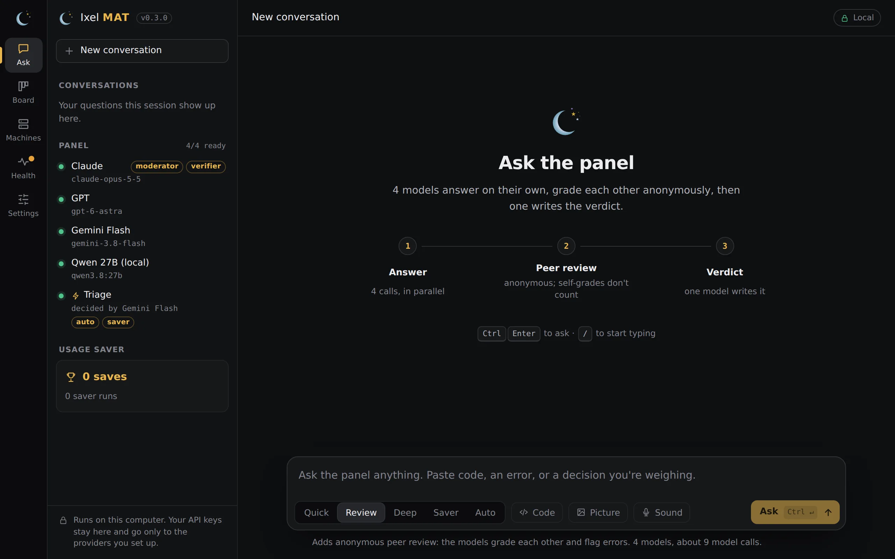
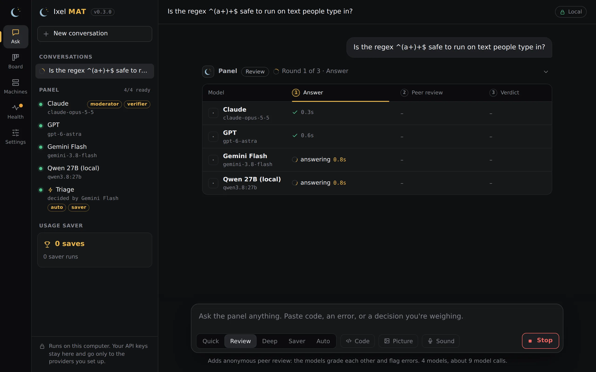
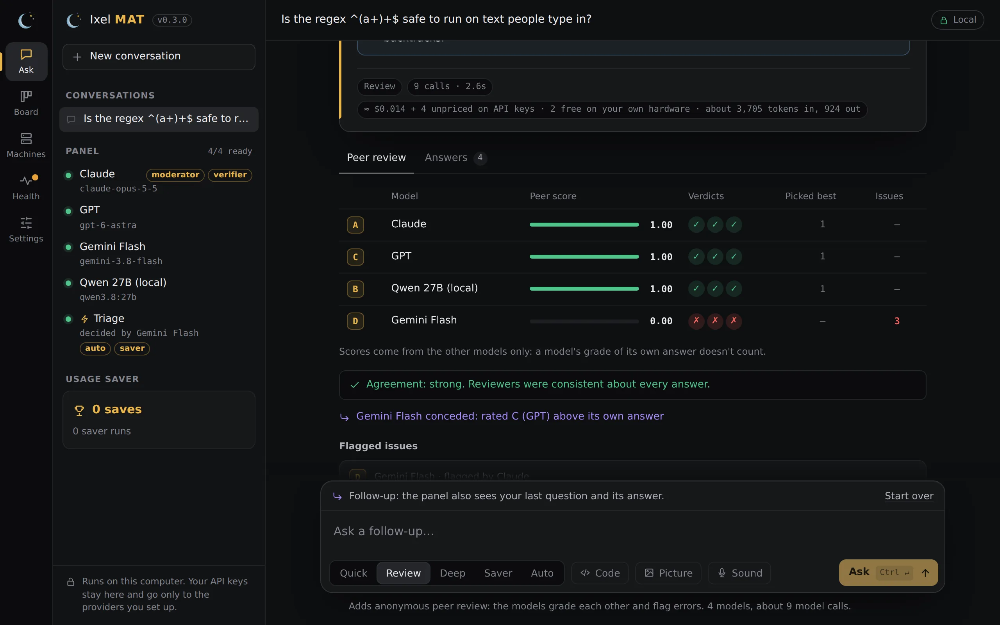
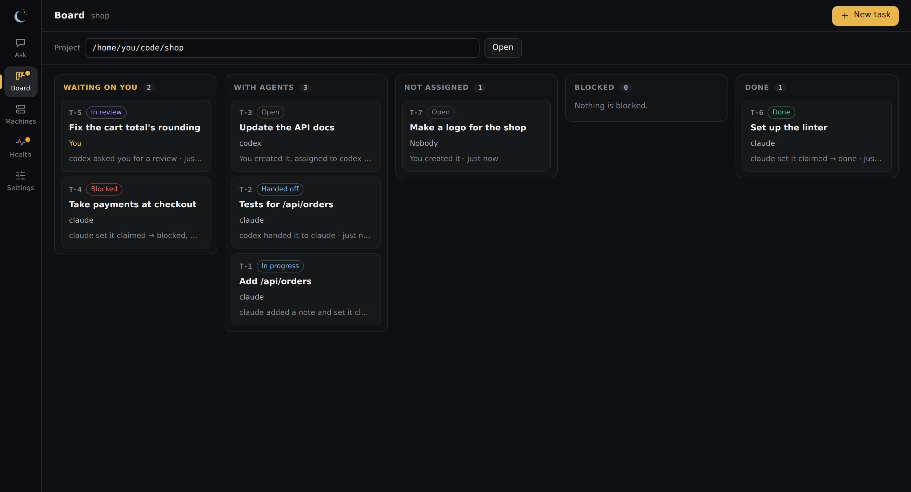
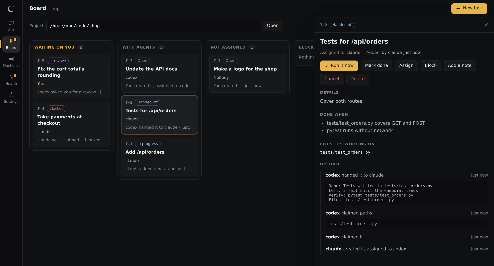
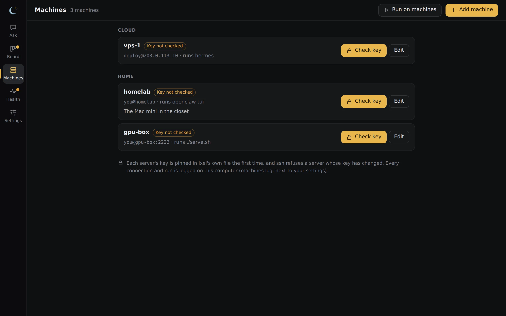
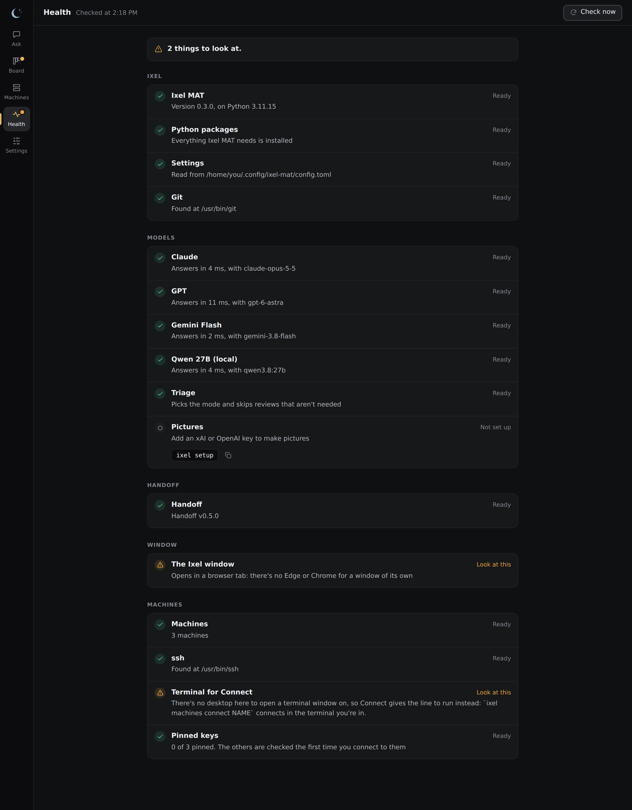
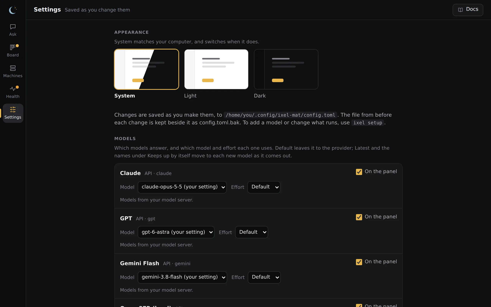

The Ixel app
One window for all of Ixel. The rail down the left side switches between Ask, Board, Machines, Health and Settings.
The pictures on this page show the app with example models, an example project and example machines. The answers in them are scripted for the pictures.
Open it
- Windows: Ixel in the Start Menu. It's Edge (or Chrome) in app mode: no tabs or address bar, and a browser profile of its own, so it doesn't touch your normal browsing.
- Mac: Ixel in the Applications folder in your home folder, or Spotlight. A native window with its own Dock icon and menus.
- Linux: Ixel in your app menu. A native window when your system has GTK and WebKit, otherwise Chrome's or Chromium's app mode.
- From a terminal:
ixel appopens the same window, andixel guiopens it as a tab in your usual browser.
Ixel stops when you close its window. The page and its server run only on your computer: the server listens on 127.0.0.1 and needs a one-time key that's in the link Ixel opens, so other people on your network and other websites can't use it.
Ask
Ask is the panel. Your conversations and the models on your panel are down the side, and each question is a thread.

Type your question
Paste code, an error, or a decision you're weighing. / jumps to the box from anywhere on the page.
Pick a mode
Under the box. The line below says how many model calls it will make.
Press Ask
Or Ctrl Enter (⌘ Enter on a Mac). Stop cancels it, and closing the window cancels it too, so a review nobody is watching makes no more calls.
| Mode | What happens | Calls, with 3 models |
|---|---|---|
| Quick | Every model answers, then one writes the verdict. No peer review. | 4 |
| Review | Answers, then each model grades the others' answers without knowing whose they are, then the verdict. | 7 |
| Deep | Review, plus a round where each model revises its answer after reading the reviews. | 10 |
| Saver | Cheaper models draft and review; your big model only checks the result. | 4 cheap and 1 big, more if a draft is sent back |
| Auto | Triage picks Quick, Review or Deep for each question. Shown when Triage is on. | Depends on the question |
While the panel works
A grid shows each model's progress, round by round: who's answering, who's done and how long it took. With three or more models, one slow model doesn't hold up the rest: once the others are done with a round, it gets as long again as they took (at least 30 seconds), and the review goes on without it if it's still working.

The verdict
The verdict comes as it's written (from Claude Code or an API model; the other programs deliver it all at once). It says how confident the panel is, what it corrected, and where it disagreed. "High" confidence stands only if some answer was rated correct by every reviewer who graded it; otherwise it shows as medium.

Under the verdict, Peer review shows each model's score and who flagged whom, and Answers shows every answer in full. Answers are labeled A, B, C in a random order, and each reviewer sees them in a different order. A model's grade of its own answer doesn't count. When a model rates another answer above its own, the page says it conceded.

Follow-ups
After an answer, your next question is a follow-up: the panel also sees your last three questions and its answers, so "and in Python?" makes sense. New conversation starts over, and earlier conversations are down the side. They last as long as the window: closing it clears them.
Code, pictures and sound
- Code opens a box for a diff, a file or a document for the panel to check alongside your question. Ixel refuses to send it if it holds what looks like a key or a token, and shows hidden characters as visible markers.
- Picture attaches up to 8 pictures (or paste a screenshot, or drop them on the page). Ixel redraws each one, which drops what a camera writes into a photo, such as where it was taken, and keeps it in memory only. Only models that can see pictures get them, and the page says which before you ask. A video gives six of its frames as pictures, and its sound as text.
- Sound records a voice note or takes a sound file, and writes its words into your question for you to read over. No model hears the sound: it goes to OpenAI or Groq, with your key, to be written out. Add an
OPENAI_API_KEYorGROQ_API_KEYunder Settings, Keys, to turn it on.
Hand work to several agents
With Handoff installed, type /handoff in Ask and say who does what:
/handoff codex review my changes, grok make pictures of my app, claude finish the next stepIxel asks which project it's for, shows who gets each part and what kind of work it is, and runs them side by side when you press Run. Every result comes back on the project's board. See Handoff.
Board
The Board is Handoff's task board for a project: the same board your agents use and handoff board shows. Type a project's folder (a git repository) and press Open, or pick one of the projects it lists. Tasks are in columns: waiting on you, with agents, not assigned, blocked, and done. A dot on the rail says when tasks are waiting on you.

Open a task to read it, its acceptance checks, and its whole history, and to act on it:
- Run it now: pick an agent and what it does. Claude Code and Codex can change files, on a branch of their own. Any model can answer, or review your changes. Pictures are made by xAI or OpenAI with your key.
- Mark done, Assign, Block, Add a note, approve a review or send it back. Everything you do here is done as you, under the board's own rules.
- New task adds one.

Pull requests are listed above the columns when the project's origin is on GitHub, GitLab or Codeberg, or your own Gitea, Forgejo, GitLab or GitHub Enterprise. Review… has the agent you pick review one; Fix… has Claude Code or Codex change it on a branch of its own. Nothing is pushed: when it's done, the Board shows the one line that adds the work to the pull request, for you to run once you've looked. Ixel only reads from the host. It never comments, approves or merges there.
Machines
Your servers, from a $5 VPS to the computer in the closet, and the OpenClaw or Hermes agent on each.

- Add machine takes its address (or a
Hostfrom your~/.ssh/config), user, port and key file, and what runs when you connect: the agent's own command, a shell, or a command you type. Import brings in the hosts in your~/.ssh/config. - Check key asks the server for its key without signing in, and shows you its fingerprint. Once you say yes, it's pinned, and from then on
sshitself refuses that machine if its key ever changes. - Connect opens a terminal running
ssh, so a password or passphrase prompt works there. Run on machines runs one command you type on the machines you pick, up to 8 at once, and shows how each one ended and its output.
Ixel uses the ssh you already have (on Windows, the OpenSSH Client that comes with it). Every connection and run is noted in a log on your computer; Privacy says where.
Health
Whether each part of Ixel is ready: your settings, each model, Handoff, Git, the window, and SSH once you have machines. Each problem comes with the one line that fixes it, ready to copy. Opening the page sends nothing anywhere; Check now also asks each model's server whether it answers and takes its key (without asking it anything), and asks each program for its version. A dot on the rail says when something needs fixing. In a terminal, ixel doctor runs the same checks.

Settings
The choices among what's already set up, each saved as you make it:
- Models: which models sit on the panel, and which model and effort each one uses, picked from a list. Effort offers only the levels that model takes.
- Asking: the mode Ask starts on, and who writes the verdict.
- Saver and Triage: the big model that verifies, the models that draft, and the model that decides. Which model for each job has picks.
- Pictures and Sound: which models see pictures, and which service makes pictures or writes out sound.
- Appearance: System (the default) matches your computer's light or dark mode, or keep it Light or Dark.
- Keys: paste, replace or remove a key. Keys are never shown again.

Settings changes only those lines of your settings file and keeps your comments. The file from before each change is kept as config.toml.bak. If the file changed since the page read it, it shows you the new one instead of saving over it. Adding a model, or changing where one's requests go, stays with ixel setup and the file itself. The Docs button at the top of the page opens these docs in your browser.